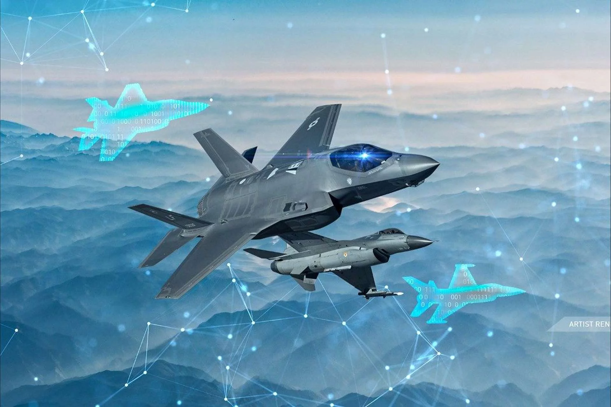

AI v letectve2/2
4. Simulácie a výcvik pilotov
- AI sa používa na vývoj realistických simulátorov pre výcvik pilotov. Tieto simulátory môžu prispôsobovať scenáre
na základe individuálnych potrieb pilotov a poskytovať spätnú väzbu v reálnom čase.
5. Personalizácia cestovania
- Inteligentné služby pre pasažierov: AI môže personalizovať cestovné zážitky, napríklad odporúčaním sedadiel, jedla
či poskytovaním informácií o trasách.
- Chatboti na letiskách: Automatizované systémy zákazníckej podpory pomáhajú pasažierom s vyhľadávaním letov,
odbavením a riešením problémov.
6. Vojenské letectvo
- Autonómne bojové systémy: Vojenské letectvo využíva AI na autonómne riadenie dronov, analýzu spravodajských informácií a plánovanie misií.
- Simulácie bojových situácií: Umelá inteligencia pomáha analyzovať a modelovať komplexné vojenské scenáre pre strategické rozhodovanie.

Názor na AI v armáde: Informačné video/